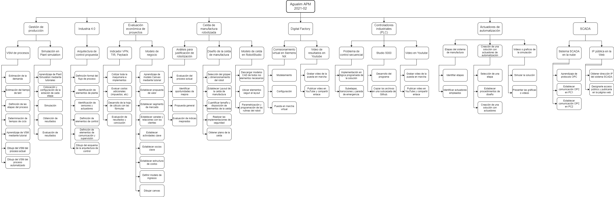

Planeación de proyecto
Se realizó un diagrama de la Estructura Desglosada de Trabajo para identificar las tareas y ponerlas en el calendario con sus respectivas fechas

Con base en esta EDT, se asignaron fechas y se creó el diagrama de Gantt mediante la herramienta Bitrix24. La lista de tareas completa con sus fechas puestas en el diagrama de Gantt está disponible en el siguiente enlace: